Rudraksh Karpe
FDE - Simplismart
Self-Improving Coding Agents, No RL Required
Rudraksh Karpe, Simplismart · Satyam Soni, NitroStack
FDE - Simplismart
Developer Advocate - NitroStack
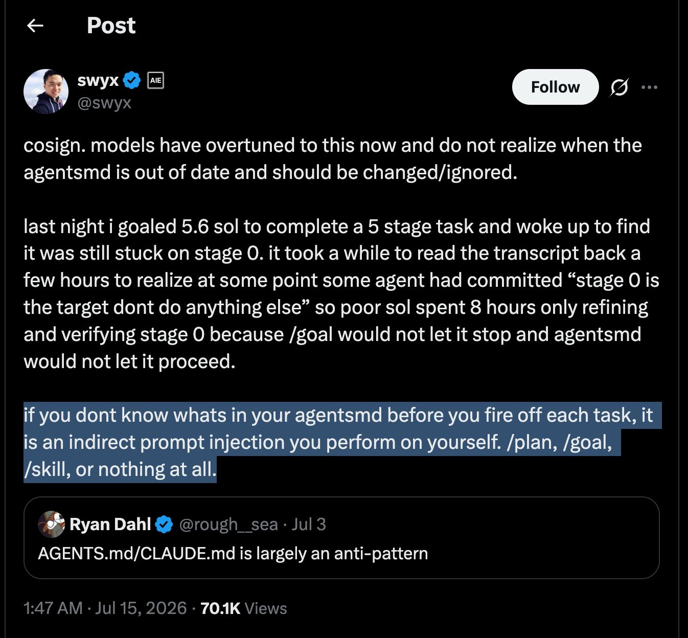
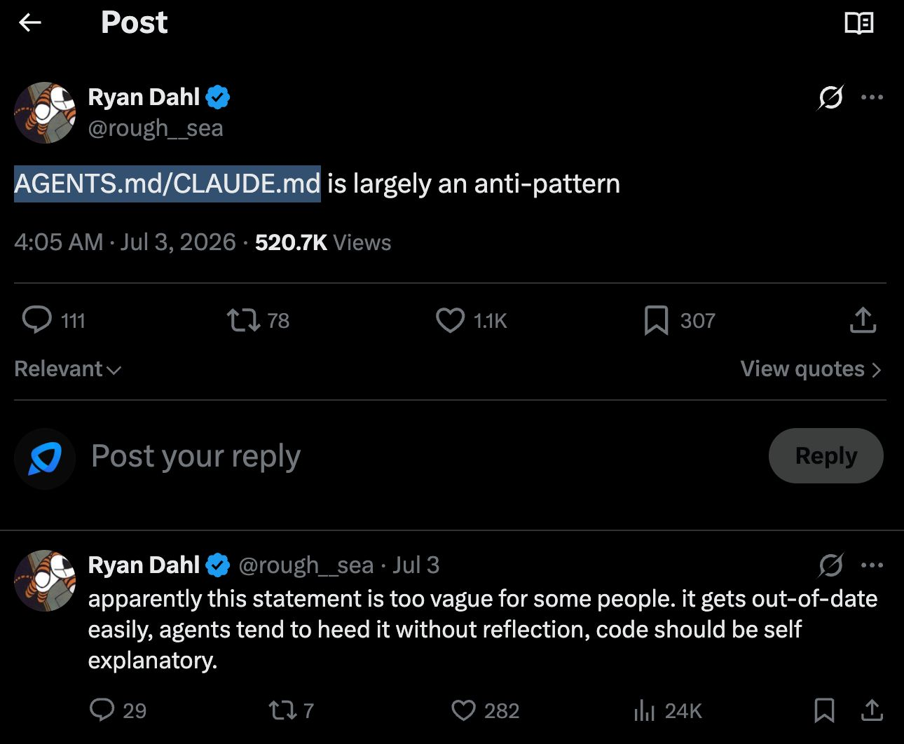
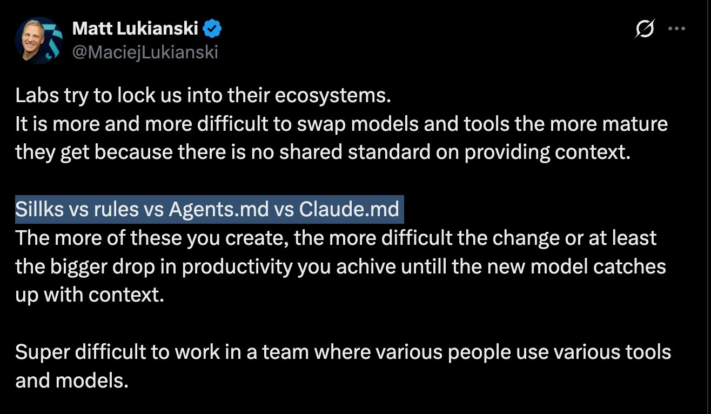
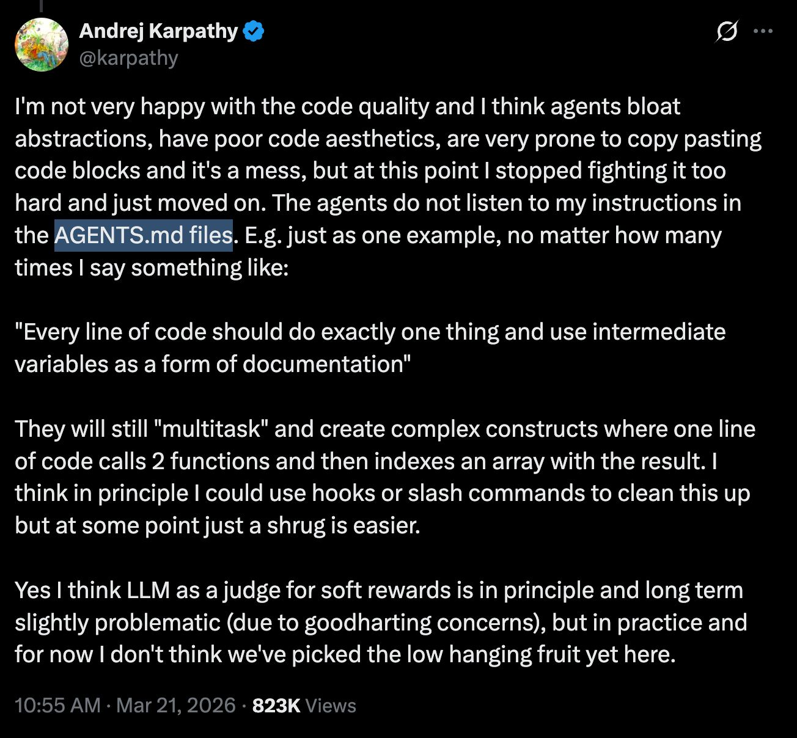
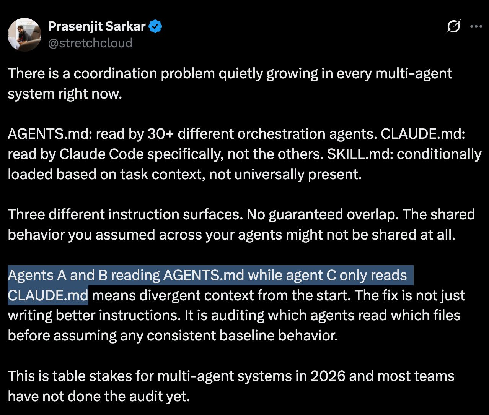
A file loaded automatically can outlive the decision that created it.
The concern targets stale and vague guidance, not the need for repository context.
Switching tools becomes harder when each agent reads a different file.
Rules need specific scope and observable validation.
Teams need to know which agent read which guidance and why it changed.
Speaker-supplied screenshots. Account, date, and engagement remain visible in each image.
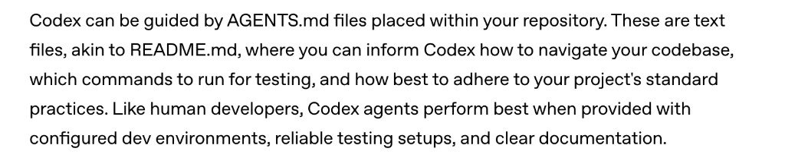
Introduced with CodexA predictable repository file for project-specific instructions.
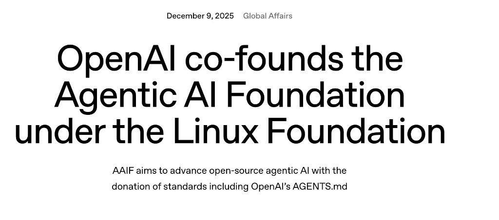
Donated to the AAIFAGENTS.md became a founding project under neutral governance.
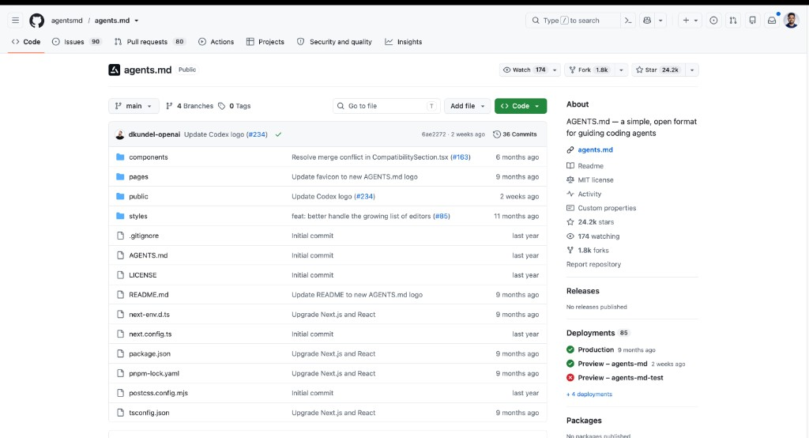
24k+ GitHub starsOpenAI reported adoption across more than 60,000 projects and frameworks at donation time.
A maintainer writes instructions or accepts a generated starting point.
The same file enters every matching coding-agent session.
Commands, architecture, and validation requirements evolve.
Someone must notice the drift, reconstruct the lesson, and edit the file.
The coding sessions produce evidence, but that evidence never reaches the instruction file automatically.
AGENTS.md gives agents persistent repository context. But how does that context improve as agents actually work?
Commands, paths, architecture, and workflows evolve.
A rule that was correct six months ago may now be wrong.
The same failed exploration can happen again because nothing records the lesson.
Teams respond by adding more instructions, increasing context and creating conflicting or stale guidance.
The question is how we continuously improve what belongs inside it.
Maintaining agent instructions is already an engineering discipline.
AGENTS.md < 200 lines
Test whether the rule is actually needed.
Good domain guides contain fixes for repeated mistakes.
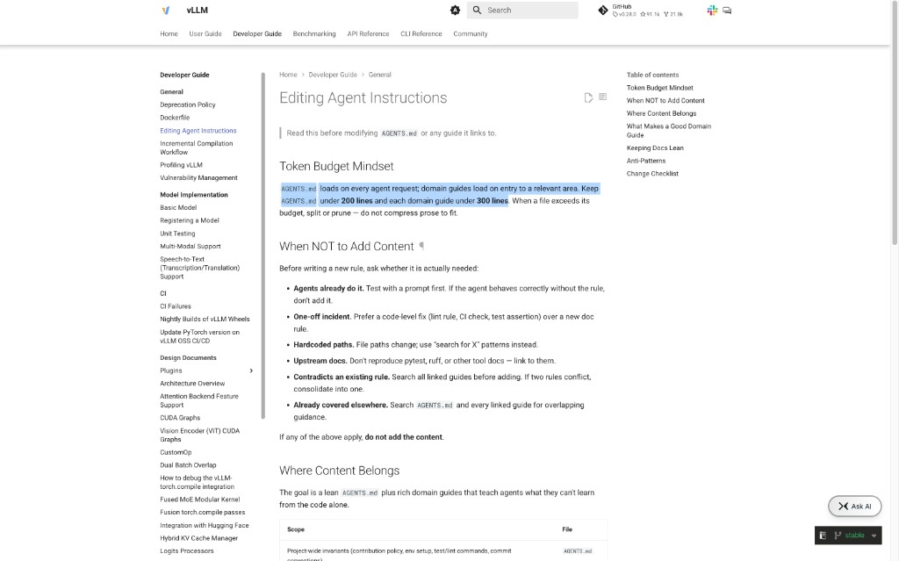
This is already how mature projects think about agent instructions. Our question is: can we make part of this maintenance loop systematic?
Corrections stay inside transcripts, review comments, and developer memory.
AGENTS.md@v0000
agentsmd records the task, proposes a narrow rule, and keeps it pending until the gate passes.
run → pending → ledger → render
init · detect and scaffoldtemplates · curated startsrender · rebuild from ledgerlint · find stale rulesdoctor · inspect setupconnect · add provider hooksautomate · set policyupdate · upgrade safelytask · group sessionssessions · inspect trajectoriesprogress · compare outcomescapture · normalize a runlearn · propose one rulepending · review queuepromote / rejectblame · show provenanceVersion and maintenance commands: log · diff · blame · revert · tag · prune · savings
The CLI detects Go, writes a structured AGENTS.md, checks the machine, connects the coding agent, and shows the reflection policy.
13-second loop · press R to restart
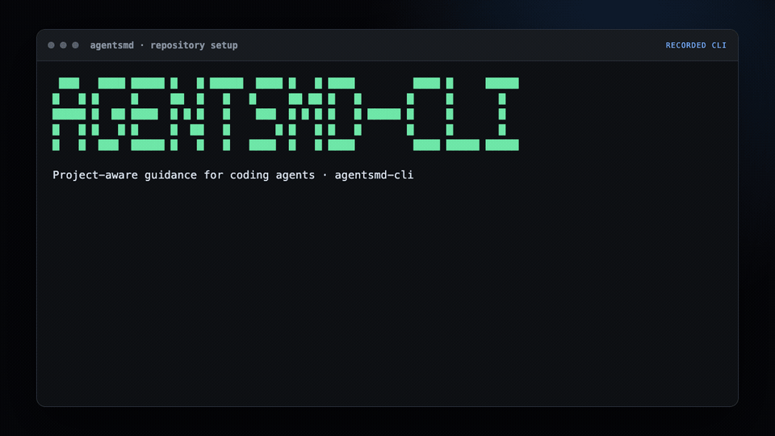
Commands, file changes, tests, duration, token counts, and Git state.
Every provider becomes one typed trajectory tied to a logical task.
A GEPA-style reflector returns one verdict and, when justified, one narrow rule.
Scope, provenance, confidence, and near-duplicate checks enter the proposal record.
Fresh workspace, relevant tests, and the project verification command.
A Go configuration task exposes wasted test retries. The proposal stays reviewable until promotion records its task and run provenance.
17-second loop · press R to restart
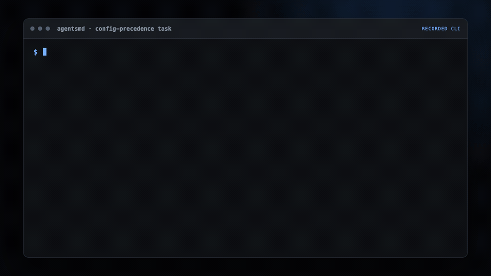
# AGENTS.md ## Project - This is a Go command-line application. - Keep changes small and preserve behavior. ## Validation - Run focused tests, then `go test ./...`. - Format Go files with `gofmt`.
# AGENTS.md ## Project - This is a Go command-line application. - Keep changes small and preserve behavior. ## Validation - Run focused tests, then `go test ./...`. - Format Go files with `gofmt`. + ## Learned rules + - Begin config bugs in loader.go and its tests. + - Keep GOCACHE inside restricted workspaces.
Scan to use it, contribute to it, and share your feedback.
Overview · Esc to close
Presentation controls · ? to close
Sources and scope · S to close
The community posts are speaker-supplied screenshots and represent individual perspectives. Animation timing communicates causal order, not measured latency.